✦ Gen 1 Through Gen 9 ✦
Game Guides
Pick your game and find out exactly which shiny hunting methods are available, what the odds are, and how to get started.
Generation 1
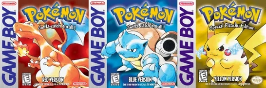
Red, Blue & Yellow
You can shiny hunt in Generation 1, but it works differently from every other game. Because the shiny mechanic did not visually exist yet, you will not see a different colored Pokemon in battle. Instead, shininess in Gen 1 is determined by a Pokemon's IVs. If a Pokemon has the right IV combination, it will appear shiny once transferred to Generation 2 via the Time Capsule or Pokemon Stadium 2.
This means you hunt in Gen 1 as normal, then transfer candidates to GSC to check if they are shiny. It is a niche method but a legitimate way to obtain shinies with Gen 1 origins.
- Shininess is determined by IVs, not a separate shiny value
- You will not see a different color while playing Gen 1
- Transfer to Gold, Silver, or Crystal via the Time Capsule to check
- Requires access to both a Gen 1 and Gen 2 game
Generation 2
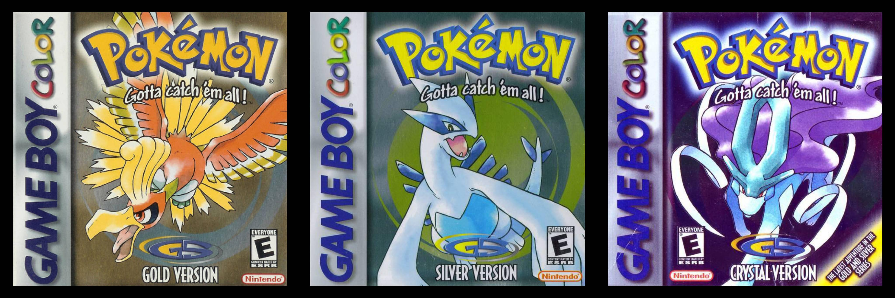
Gold, Silver & Crystal
In Generation 2, shininess is still tied to IVs rather than a separate hidden value. Random encounters are the primary method, but you can also increase your chances of hatching a shiny egg by breeding with a shiny Pokemon. If one parent is shiny, the odds of hatching a shiny offspring are notably higher than base rate, because the shiny parent passes down favorable IVs to the egg.
- Available methods: Random Encounters, Breeding with a Shiny Parent
- Base odds: 1 / 8,192
- Breeding with a shiny parent significantly improves egg odds
- No Shiny Charm available
Generation 3
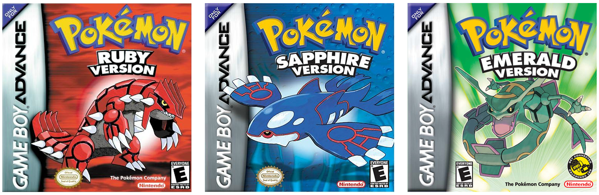
Ruby, Sapphire & Emerald
Gen 3 introduced the separate shiny value independent of IVs. Soft resetting and random encounters are both viable. No chain mechanics exist yet.
- Available methods: Soft Resetting, Random Encounters
- Odds: 1 / 8,192
- No Shiny Charm available
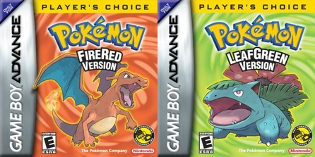
FireRed & LeafGreen
Same mechanics as RSE. Soft resetting starters and random encounters are your options. The three Kanto starters are popular targets.
- Available methods: Soft Resetting, Random Encounters
- Odds: 1 / 8,192
Generation 4
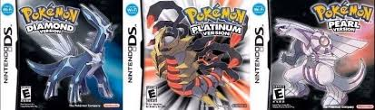
Diamond, Pearl & Platinum
Gen 4 introduced the Masuda Method and the Poke Radar chain. Both are powerful tools that significantly boost odds over base rate.
- Available methods: Masuda Method, Poke Radar Chaining, Soft Resetting, Random Encounters
- Base odds: 1 / 8,192
- Masuda Method: 1 / 1,638
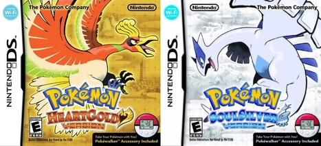
HeartGold & SoulSilver
HGSS adds the Safari Zone and revisits the Johto region. All Gen 4 methods apply. The three Johto starters are top soft reset targets.
- Available methods: Masuda Method, Soft Resetting, Random Encounters
- Base odds: 1 / 8,192
Generation 5

Black & White
The Masuda Method continues from Gen 4. Base odds remain 1 / 8,192 in Black and White.
- Available methods: Masuda Method, Soft Resetting, Random Encounters
- Base odds: 1 / 8,192
Black 2 & White 2
B2W2 introduced the Shiny Charm as an in-game item for the first time, rewarding players who complete the National Pokedex.
- Available methods: Masuda Method, Soft Resetting, Random Encounters
- Base odds: 1 / 8,192
- Shiny Charm base: 1 / 2,731
Generation 6
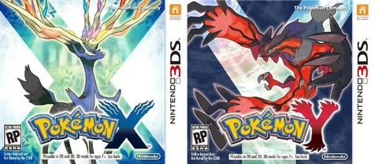
X & Y
Gen 6 cut base odds in half to 1 / 4,096. Friend Safari is a powerful exclusive method with notably improved odds. Pokemon found in the Safari have a 1 / 512 base shiny rate.
- Available methods: Friend Safari, Masuda Method, Soft Resetting, Random Encounters, Chain Fishing
- Base odds: 1 / 4,096
- Friend Safari: 1 / 512
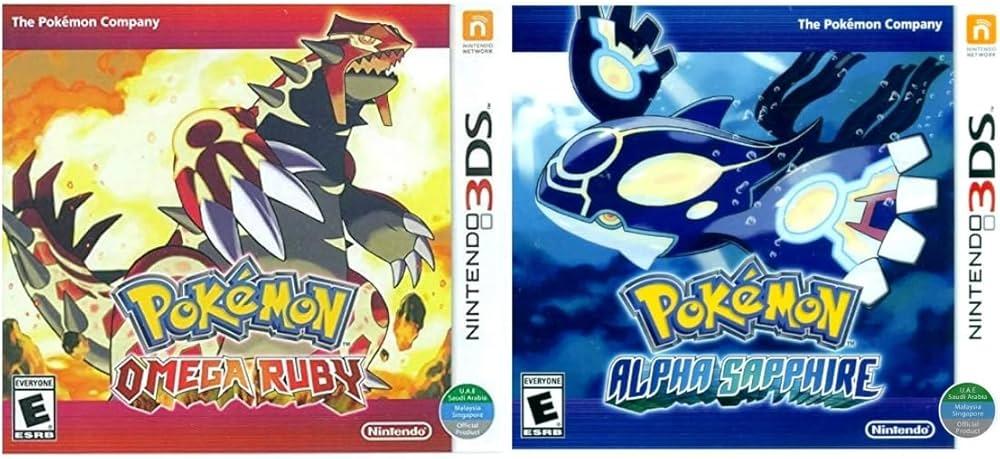
Omega Ruby & Alpha Sapphire
ORAS introduced the DexNav, one of the most beloved shiny hunting tools in the series. Chaining with the DexNav dramatically boosts odds and can even reveal hidden abilities.
- Available methods: DexNav Chaining, Masuda Method, Soft Resetting, Random Encounters
- Base odds: 1 / 4,096
- DexNav at 50+ chain: approx. 1 / 315
Generation 7
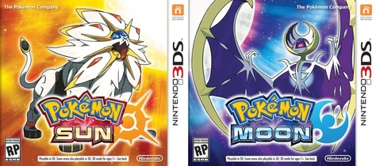
Sun & Moon
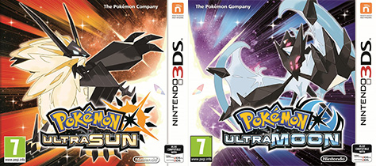
Ultra Sun & Ultra Moon
Gen 7 introduced SOS Chaining, one of the most efficient and widely used methods. Building a chain of 31 or more calls dramatically improves odds and also allows you to hunt for hidden abilities simultaneously.
- Available methods: SOS Chaining, Masuda Method, Soft Resetting, Random Encounters
- Base odds: 1 / 4,096
- SOS at 31+ chain: approx. 1 / 315
- SOS with Shiny Charm: approx. 1 / 273
Generation 8
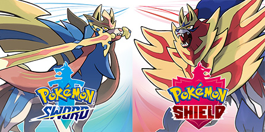
Sword & Shield
Sword and Shield introduced the Brilliant Aura method where sparkling Pokemon in the overworld improve odds the more you defeat. The Wild Area provides access to many species.
- Available methods: Brilliant Aura Chaining, Masuda Method, Soft Resetting, Random Encounters
- Base odds: 1 / 4,096
- At 500+ KOs of same species: 1 / 2,048
- With Shiny Charm and 500 KOs: 1 / 1,024
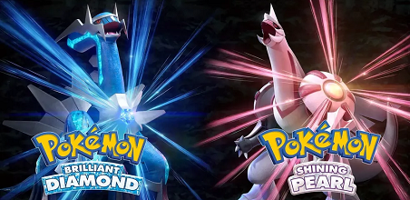
Brilliant Diamond & Shining Pearl
BDSP brought back the Poke Radar from Gen 4, updated for modern play. Chaining with the Radar is especially effective for hunting specific species.
- Available methods: Poke Radar Chaining, Masuda Method, Soft Resetting, Random Encounters
- Base odds: 1 / 4,096
- Poke Radar at 40 chain: approx. 1 / 99
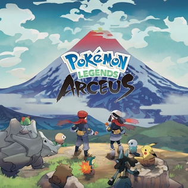
Pokemon Legends: Arceus
Arceus completely changed shiny hunting with overworld spawns that let you see shinies without entering battle. Mass Outbreaks can flood the map with a single species, making them ideal for hunting.
- Available methods: Mass Outbreaks, Space-Time Distortions, Random Encounters
- Base odds: 1 / 4,096
- With Research Level 10 and Shiny Charm: approx. 1 / 819
Generation 9
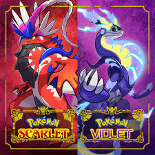
Scarlet & Violet
Scarlet and Violet use Mass Outbreaks paired with Herba Mystica sandwiches to boost shiny odds. The Sparkling Power sandwich effect stacks with the Shiny Charm for some of the best odds in the series.
- Available methods: Mass Outbreaks, Sparkling Power Sandwiches, Soft Resetting, Random Encounters
- Base odds: 1 / 4,096
- With sandwich and 60 outbreak KOs: approx. 1 / 512
- With sandwich, Shiny Charm, and 60 KOs: approx. 1 / 366